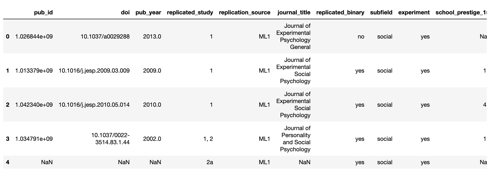
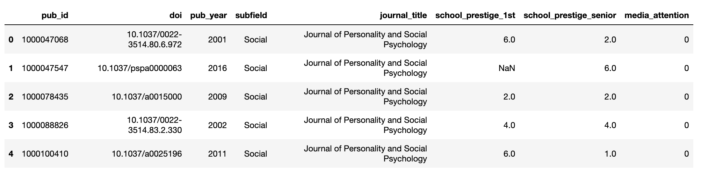
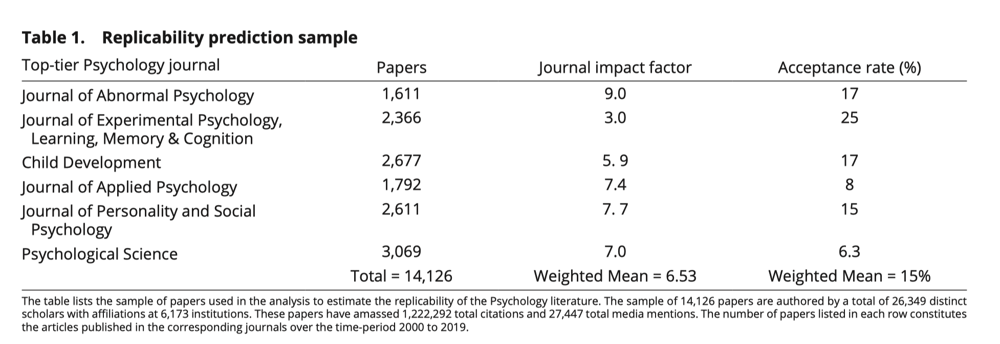
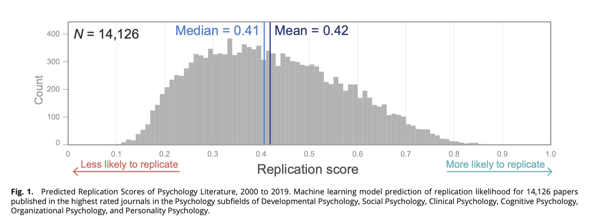

Youyou, W., Yang, Y., & Uzzi, B. (2023). A discipline-wide investigation of the replicability of Psychology papers over the past two decades. Proceedings of the National Academy of Sciences, 120(6), e2208863120.
意义
可复现研究的数量远远低于科学界期望，我们创建了一个基于文本数据的机器学习模型，估计了自2000年以来心理学六个子领域中发布的超过14,000篇文章的可复现性分析。此外，我们还调查了可复现性与不同的研究方法、作者的生产力、引用影响力和机构声誉、论文的引用增长和社交媒体覆盖率有关的变化。我们的研究结果有助于建立大规模的经验模式，以便为推进复现研究提供依据。
本文章节
大家可以选择感兴趣部分阅读。该论文提供了词向量模型文件，如果是做社科研究的同学，可以下载下来，探索下词向量。例如查看概念近义词。
一、摘要
二、代码
2.1 训练集
2.2 测试集数据
2.3 词向量模型
三、正文
四、数据和方法
4.1 机器学习模型
4.2 关于模型迁移学习是否会预测不准问题
4.3 评估可复现性前后出版的相关度量。
五、结果
六、讨论
一、摘要
对社会科学中较弱的可复现性的猜测使学者们渴望量化这一学科的复现失败的规模和范围。然而，仅靠小规模的人工复现方法无法应对这个大数据问题。在这里，我们进行了一项跨学科的科学复现普查。我们的样本（N=14,126篇论文）涵盖了近20年来发表在六个顶级心理学期刊上的几乎所有论文。使用一个经过验证的机器学习模型，估计论文的复现可能性，我们发现证据既支持又反驳了从相对较小的人工复现样本中得出的推测。首先，我们发现单一的心理学复现率不能很好地捕捉不同子领域中可复现性的程度变化。其次，我们发现，在所有子领域中，复现率与研究方法强相关。实验法的复现率明显低于非实验研究的复现率。第三，我们发现作者的累积出版物数量和引用影响力与复现可能性呈正相关，而其他反映研究质量和严谨性的指标，如作者的大学声誉和论文的引用，与可复现性无关。最后，与媒体注意应该关注可复现性的研究的理想相反，我们发现媒体的注意力与复现失败的可能性呈正相关。我们对可复现性的规模和范围的评估是广泛解决可复现性问题的重要下一步。
二、代码
论文的数据及代码 下载地址
2.1 训练集
import pandas as pd
#标注的训练集数据388篇论文(314个实验论文+72个非实验研究)
training_df = pd.read_csv("training_sample.csv")
print(len(training_df))
training_df.head()
Run
388

2.2 测试集数据
#带预测的14125篇论文数据
prediction_df = pd.read_csv("prediction_sample.csv")
print(len(prediction_df))
prediction_df.head()
Run
14126

2.3 词向量模型
词向量设置为200维， 训练得到的模型文件638M。
from gensim.models import KeyedVectors
# 导入模型文件
w2v_model = KeyedVectors.load_word2vec_format('mag_200d_psy_eco_word2vec')
#词汇量
len(w2v_model.index_to_key)
Run
275561
查看词向量模型的近义词，如果想用expand_dictionary函数，请阅读
预训练模型 | 金融会计类word2vec， 可扩展或构建领域内概念情感词典
#查看幸福的同义词
#这个函数是我自己定义的，需要的点击上方说明的链接
expand_dictionary(wv=w2v_model,
seedwords=['happiness'],
topn=30)
Run
['happiness',
'happiness,',
'happiness.',
'well-being',
'well-being,',
'swb',
'contentment',
'wellbeing',
'peacefulness,',
'well-being:',
'happiness;',
'life-satisfaction,',
'gratitude',
'wellbeing,',
'unhappiness',
'eudaimonic',
'life-satisfaction',
'happier',
'loneliness',
'gratitude,',
'happiness:',
'peacefulness.',
'flourishing,',
'contentment,',
'materialism',
'swb,',
'flourishing',
'joy',
'vitality',
'gratefulness',
'eudemonic']
expand_dictionary(wv=w2v_model,
seedwords=['mental'],
topn=30)
Run
['mental',
'health',
'illness',
'backgroundmental',
'psychiatric',
'illness,',
'ofmental',
'abstractmental',
'illnesses',
'nonmental',
'mental-health',
'psychosocial',
'health/substance',
'illnesses,',
'psychological',
'health/social',
'diagnosable',
'disability',
'substance',
'ill-health',
'stigma',
'psycho-social',
'mdos.',
'health,',
'health/mental',
'non-mental',
'retardation/developmental',
'stigmatization',
'stigmatizing',
'illness.',
'disability,']
三、正文
可复现性对于加强科学预测和改善生活水平的战略至关重要，也是科学自我纠正的证明。卡尔·波普尔(1)得出结论，科学中的复现确保了“我们不仅仅在处理孤立的‘巧合’，而是处理具有规律性和可复现性的事件，这些事件从原则上来说是可以经过主体间的测试的。”2011年，一项有争议的关于“时间保留因果性”的研究(2)引发了一项罕见的复现研究。复现失败(3,4)，随之而来的是更多的复现研究，发现复现失败不仅仅是单一事件(5-10)。研究人员对系统性复现失败的影响表示担忧，包括知识库的削弱、公众对科学的不信任以及资金削减(11-13)。2016年，自然杂志对1500名科学家的调查报告称，51%的受访者认为科学正在经历复现危机(14)。这一回应促使美国国防高级研究计划局在2018年创建了一个计划，研究社会科学领域复现失败的规模和范围(15-17)。
尽管人们越来越担心复现失败的问题，但手动复现研究的样本数量很少，只占总文献的一小部分(18,19)。在心理学这个进行复现研究最多的科学学科中，直接、独立的复现研究数量不到400个。此外，样本的选择不平衡，主要来自于选定作者或特定子领域的经典论文(20,21)。大多数复现研究来自社会心理学和认知心理学等子领域，导致有关发展心理学、临床心理学和教育心理学等领域是否存在相似的复现失败率的猜测，尽管缺乏子领域特定的分析(22,23)。
**为了扩大和丰富复现数据，研究人员开发了替代方法来估计论文复现成功的可能性(**24)。预测市场已成为估计论文可复现性的主要方法。它涉及让专家们打赌，是否会在未来的手动复现测试中成功复现已经发表的论文(25)。该方法的高准确性使预测市场成为估计论文可复现性的有效解决方案(16然而，尽管预测市场比手动复现更具规模化，但仍需要在多年时间内招募数千名专家评审，以预测大量论文的可复现性(17)。
机器学习方法也被开发出来预测复现结果。机器学习模型可以从研究的叙述文本(26)或研究的数值特征，如P值或研究的样本大小(27,28)来预测可复现性。这两种类型的模型都能够准确预测，与预测市场的预测准确度相当(26)。基于文本的模型量化论文中的叙述，包括研究设计的描述和结果的解释(29)，这些内容在仅基于数值特征的模型中无法捕捉。此外，文本量化可以自动化，从而使该技术比从手稿中手动提取数值特征更具可扩展性和可复现性。
本文采用基于文本的机器学习方法来预测心理学文献的可复现性。我们的样本包括六个主要子领域的顶级心理学期刊近20年发表的几乎所有论文：临床心理学、认知心理学、发展心理学、组织心理学、人格心理学和社会心理学。总共有 14,126 篇论文，由 26,349 位不同的作者和 6,173 个不同的机构撰写，共有 1,222,292 次引用和 27,447 次媒体提及。
我们的分析如下：我们首先简要描述了我们的基于文本的机器学习模型，该模型已经得到验证，并显示能够准确预测手动复现的结果(26)。然后，我们应用该模型来预测心理学文献的可复现性，并着眼于研究可复现性如何在心理学子领域、研究方法、出版前后的特征以及作者团队的专业知识和经验方面存在差异。
四、数据和方法
我们的分析使用了多种不同的文献、作者和媒体报道数据来源。生成数据的数据和代码已经存放在开放科学框架(OSF)上(30)。表格1列出了用于分析的大量期刊出版物，包括五个专门子领域的期刊和一份综合期刊《Psychological Science》。

所有论文均在2000年至2019年期间发表，并根据期刊的子领域专业化进行分类：
- Journal of Abnormal Psychology (临床心理学)
- Journal of Experimental Psychology, Learning, Memory & Cognition (认知心理学)
- Child Development (发展心理学)
- Journal of Applied Psychology（组织心理学）
- Journal of Personality and Social Psychology（社会心理学）
这里有两个例外。首先，因为人格研究出现在所有顶级期刊中，如果论文标题或摘要中含有 “人格personality” 一词，无论它们出现在哪个期刊中，我们都将其标记为人格研究。其次，由于 Psychological Science 刊登来自各个子领域的作品，我们将其论文分类为主要发表在哪个子领域期刊上的论文的所属子领域。总样本包括14,126篇论文。所有数据均按照出版商的使用条款和英国版权法进行收集。
4.1 机器学习模型
机器学习模型使用了随机森林和逻辑回归模型的集成，基于论文的文本预测了论文的可复现性概率。该模型在之前的一篇文章中经过了严格的样本外测试，并被证明其准确度与预测市场相当(26)。具体而言，创建模型的步骤如下(请参见SI附录，图S2说明程序)：
- 第1步，将英语单词转换为向量。我们使用 word2vec(31) 在Microsoft学术图(MAG)(32)的 2000万社会科学出版物摘要语料库上训练模型。目标是将单词与社会科学文献的上下文联系起来，并以一个200维向量的形式量化表示这种联系。
- 第2步，将出版物转换为向量。为此，我们将训练样本(Table 2)中每篇论文中每个单词的标准化频率乘以其相应的200维单词向量，从而产生一个表示论文文本内容的论文级向量。
- 第3步，使用随机森林和逻辑回归的集成从论文级向量中预测每篇论文的复现结果(通过/失败)。为确定一项研究是否复现，我们使用所有复现研究报告的共同指标——复现团队对研究是否复现的总结判断(“是”或“否”)。步骤1到步骤3共同创建了一个使用论文的文本/叙述来预测其可复现性概率的机器学习模型，我们称之为“复现得分”(replication score)。SI附录，补充文本3提供了所有程序的详细信息。注意，论文中使用的是监督学习算法， 训练数据集仅有386篇（314个实验论文+72个非实验研究）
4.2 关于模型迁移学习是否会预测不准问题
论文评估了与迁移学习相关的问题。当模型在一个领域中开发并应用于另一个领域时，就会发生迁移学习(43)。我们的研究中出现了这种情况，因为预测样本包含了训练样本中没有的两个子领域——临床心理学和发展心理学。这两个子领域的手动复现研究很少，如果要积累足够的样本可能需要另一个十年时间(44)。这引发了一个担忧，即模型能否为临床心理学和发展心理学中的论文提供有效的估计。为了解决这个问题，我们遵循协议，进行了三个独立的鲁棒性测试(43, 45, 46)。
(i)我们使用现有的社会和认知心理学数据来模拟迁移学习过程，估计使用一个基于一个心理学子领域的手动复现数据训练的模型来预测另一个心理学子领域的复现失败的表现，并将模型的预测与预测子领域中的实际手动复现数据进行比较。具体而言，我们研究了仅基于社会心理学论文( n=256)开发的模型在认知心理学论文(n=90)上的表现。我们发现，这种迁移学习到认知心理学的表现(AUC=0.72)与将模型应用于社会心理学的表现基准(AUC=0.73)相当。这为心理学子领域之间的迁移学习成功提供了支持。
(ii)有人可能会认为文本模型从社会心理学到认知心理学的成功转移并不保证其能够成功转移到临床心理学或发展心理学。为回答这个问题，我们比较了各个子领域的主题和文本相似性。先前的机器学习研究表明，基于文本的模型的迁移学习在训练和应用领域的文本特征更相似时更成功(47)。因此，如果社会-临床和社会-发展的相似性与社会-认知相似或更高，我们可以期望该模型在临床或发展心理学中的效度与在认知心理学中一样。
为了衡量两个子领域之间的研究主题重叠程度，我们从MAG数据库中收集了测试样本中每篇论文的研究主题。为了衡量两个子领域之间的文本相似性，我们计算了余弦相似度和词移距离（WMD）。附录SI，补充文本3.4.1详细描述了这些方法。
结果显示，临床心理学（57％）和发展心理学论文（56％）与社会心理学论文的主题重叠比认知论文（42％）更高。此外，所有三个子领域都与社会心理学表现出相等的文本相似度（余弦相似度=0.90至0.91，WMD=0.24至0.26）。因为分析（i）显示基于社会心理学构建的模型可迁移到认知心理学，我们现在可以期望该模型可迁移到临床心理学和发展心理学，因为在这些领域观察到与社会心理学更高的特征相似性。
我们评估了在临床心理学或发展心理学论文中，预测的复现得分与样本大小和P值等可复现性的替代指标的一致性。这两个指标都是可靠性的指标，因为样本大小越大，P值越低，虚阳性的风险就越小（5, 48, 49）。我们强调，预测模型不包含任何关于样本大小和P值的信息，因为训练样本中的论文已经去除了所有数字或统计信息。因此，如果一篇论文的样本大小和P值与我们模型的复现预测相关，那么它将为模型在临床心理学或发展心理学中的适用性提供独立支持。
在程序上，我们手动编码了来自预测结果的临床心理学和发展心理学的一组随机研究。为了获取样本大小，我们从论文中提取了参与者的数量。如果一篇论文有多个研究，我们取所有研究的平均样本大小。为了获得P值，我们从摘要中找到了论文的第一个主要声明，并提取了与该主要声明相关联的测试的P值。主要声明通常以“结果显示”或“我们的分析表明”等短语开头。补充文本3.4.2提供了更多的方法细节。
结果显示，预测的复现得分与原始样本大小r(97)=0.31，P=0.002和原始P值r(91)=-0.42，P <0.001的等级顺序相关。由于预测模型不包含样本大小和P值信息，因此结果不是自证的，为成功的转移学习到临床心理学和发展心理学提供了支持。
4.3 评估可复现性前后出版的相关度量。
为了检查复现概率与论文其他可观察的出版特征之间的联系，我们构建了几个关键的可观察特征的度量。例如，已经有假设认为复现结果与研究人员的专业知识（34）或论文的媒体关注度（50）有关。我们收集了五个度量来捕捉论文的特征，其中三个度量预测了作者团队的特征，而另外两个度量预测了读者对研究的反应。预发布特征包括论文的第一作者和高级作者的经验和能力，衡量方法是他们在发表研究论文之前的：1）发表的论文数量累计总数，2）引用影响力，3）机构声誉，基于第一作者和高级作者的大学在2021 QS世界大学排名中的排名。高级作者是指在焦点论文发表时具有最高累积引用的作者。发表后的特征包括焦点论文的4）引用计数和5）媒体提及次数。媒体提及次数由Altmetric (52)计算。所有其他度量均来自Dimensions (53)，Dimensions已经批准我们在此项目中使用这些数据。为了控制度量中的出版年龄和子领域差异（见SI Appendix，图S1），我们通过将观察得分除以其子领域和出版年份的平均值来对所有度量进行了标准化。SI附录，补充文本2介绍了有关这些度量及其如何标准化的更多详细信息。
五、结果
**使用上述校准的机器学习模型，我们预测了每篇文章在可复现性预测样本（n = 14,126）中的可复现性得分。该得分可以解释为可复现性成功的相对可能性。**换句话说，一个可复现性得分为0.80的论文比得分更低的论文更有可能复现，并且比可复现性得分为0.40的论文有两倍的复现概率。使用可复现性得分，我们进行了三组分析：
- 首先，我们确定了心理学子领域在估计可复现性率方面的差异，弥合了以前手动复现实验的小样本缺陷；
- 其次，我们比较了实验和非实验研究设计之间的可复现性率；
- 第三，我们研究了可复现性与论文其他出版前和出版后特征之间的相关性。

图1显示了所有14,126篇心理学论文的可复现性得分分布（范围为0.10到0.86，平均值为0.42，中位数为0.41，标准差为0.15，偏度为0.31）。有几点发现值得注意：
- 首先，该分布与手动复现实验的猜测和预测市场的最新预测大致一致（15）。手动复现实验表明，心理学论文中略多于不及格的论文（43%的总体成功率）。最近20年的心理学出版物的可复现性得分估计分布也显示出类似的模式。
- 其次，有人认为，心理学中对可复现性失败的关注已经提高了可复现性的严格性（54）。当我们绘制我们20年期间的平均可复现性得分时，发现可复现性得分相对稳定。平均可复现性得分从2000年到2010年约下降了10%，然后从2010年到2019年回升到大约与2000年相同的水平（SI Appendix，Fig.S6）——这一模式与观察到的改变研究实践可能已经提高了心理学的可复现性率的观察相一致（9, 21, 55）。
- 第三，我们发现，汇总心理学子领域的可复现性得分掩盖了重要的子领域差异。下面，我们将详细说明心理学子领域之间的可复现性率差异。
六、讨论
本研究使用机器学习模型量化科学手稿中的文本，以预测其复现概率。该模型使我们能够首次对心理学六个主要子领域杂志上发表的几乎所有论文进行复现普查，分析重点是估计整个学科的复现率，以及复现率如何因子领域、实验和非实验方法以及其他研究论文特征而异。为了保持基于人类专业知识的结果，我们在可能的情况下验证了结果与可用的手动复现数据一致。结果进一步提供了可以推进复现理论和实践的见解。
我们方法的一个核心优势是其规模和范围。先前关于复现失败程度的推测基于相对较小的、有选择性的手动复现样本(21)。我们分析了多个子领域的14,000多篇论文，发现复现成功率在子领域间存在广泛差异。因此，不可能用一个单一的复现失败率来表征多样的学科分支。此外，我们的结果显示，复现成功率的子领域差异与研究方法有关。我们发现，对于所有子领域，实验研究的复现率明显低于非实验方法，并且在较少进行实验的子领域中，复现率相对较高。这一发现令人担忧，因为心理学在实验方面的熟练程度是其强有力的科学声誉的一部分。
分析可复现性与研究论文的其他度量标准的关系时，我们发现，虽然可复现性与研究人员的经验和能力呈正相关，但作者的大学声望和论文的引用量等研究质量的其他代理变量与心理学的可复现性无关。这些发现强调了需要在评估研究和学者时对前-后出版度量标准保持谨慎的态度。
我们还将媒体关注度与论文的可复现性进行了相关分析。媒体在创造科学公众形象和推广知识方面扮演着重要角色，但它通常有动机报道那些反直觉、引人注目的结果。理想情况下，媒体报道与心理学研究的可复现性率应有正向关系（或者没有关系）。然而，我们发现，媒体对论文的报道与其复现成功的可能性存在负相关。因此，基于媒体报道来判断一篇论文的价值是不明智的。对于媒体来说，提醒公众新的、创新的科学研究结果只是引发思考，需要未来的复现实验来证实其健壮性，是很有价值的。 我们设想了两种可能的应用方向：
第一，机器学习模型可用于预测难以或无法进行手动复现的研究（例如纵向研究和特殊或难以访问的人群）。
第二，预测的复现分数可以开始帮助优先选择需要手动复现的某些研究，面对资源有限的情况。每年，个人学者和组织（如心理学科学加速器（67）和协作复现和教育项目（68））都会遇到一个问题：从众多的心理学研究中选择哪些进行复现。Isager等人（69）提出，为了最大化复现的收益，社区应该优先复现那些价值高、结果不确定的研究。研究的价值可以通过引用量或媒体关注度等因素来近似计算，但不确定性部分尚未得到大量文献的充分衡量。我们建议，我们的机器学习模型可以提供复现不确定性的定量测量。 我们注意到，我们的发现在几个方面存在限制：
-
首先，我们对所有论文的预测都来自于顶级期刊。未来的研究可以检查来自较低排名期刊的论文，以及它们的可复现性如何与发表前后的指标相关联（70）。
-
其次，可复现性的估计仅是近似值。在子领域级别上，我们分析的六个子领域中有五个子领域仅由一种顶级期刊代表。单个期刊不能涵盖整个子领域的范围。
未来的研究可以在以下几个方向展开：
-
我们的复现得分可以与其他方法结合使用，例如预测市场（16）或非文本机器学习模型（27、28），以进一步精确估计心理学研究的可复现性；
-
可以重复设计本研究，以在其他学科中进行复现普查；
-
可将可复现性得分进一步与其他感兴趣的指标进行相关性分析。
社会科学中的可复现性受到变异性的限制，它最终是一种由各种方法组合而成的集体企业。波普尔在他的书《科学发现的逻辑》中提出：“即使是我们自己的观察结果，我们也不会完全认真对待，或将其视为科学观察结果，直到我们对其进行了重复和测试”（1）。然而，尽管波普尔对于重复和可重复性的洞察是正确的，但必须认识到测试带来了探索的成本。机器学习方法与人类智慧的结合，是发展更好的可复现性理解的有效方法。这种组合平衡了测试成本和科学探索的收益。